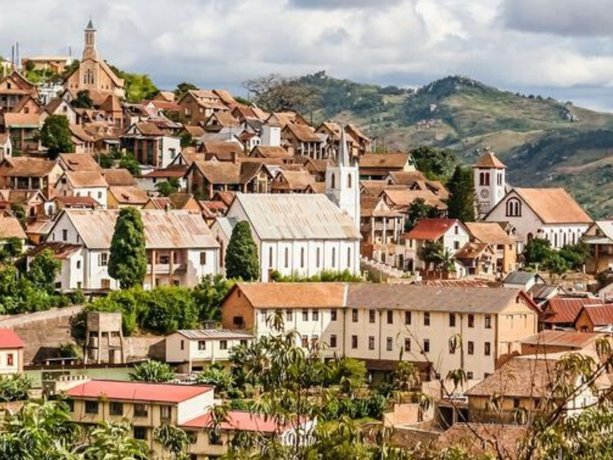

Les provinces de Madagascar et leurs merveilles
Antananarivo
La province d'Antananarivo était l'une des six provinces de Madagascar, centrée autour de la capitale, Antananarivo qui est aussi la capitale du pays. Elle a une superficie de 58 283 km2 et une population de 5 932 607 personnes.
Mahajanga
La province de Mahajanga ou province de Majunga était l'une des six provinces de Madagascar, avec une superficie de 150 023 km2. En 2011, elle avait une population de 2 224 570 habitants. Sa capitale est Mahajanga (ou Majunga).

Tulear
La province de Toliara ou province de Tuléar (ou de Tolozy dans la langue courante locale) était l'une des six anciennes provinces de Madagascar, la plus vaste avec une superficie de 161 405 km². Elle a une population de 2 229 550 habitants (juillet 2001). Sa capitale est Toliara 1. La dénomination de « province » est appelée à disparaître au moins sur le plan politique et administratif, à la suite de la dernière réforme constitutionnelle d'avril 2007 qui consacre les régions.
Diego
La province d'Antsiranana, ou province de Diego Suarez, était l'une des six provinces de Madagascar. Elle a une superficie de 43 406 km2 et une population de 1 465 606 habitants (2011). Sa capitale est Antsiranana.

Tamatave
La province de Tamatave était l'une des six provinces de Madagascar avec une superficie de 71 911 km2. En 2011, elle avait une population de 3 438 275 habitants. Son chef-lieu éponyme est la ville de Toamasina (nom malgache de « Tamatave »).
Fianaratsoa
La province de Fianarantsoa était l'une des six provinces de Madagascar avec une superficie de 103 272 km2. En 2011, elle avait une population de 4 142 444 habitants. Sa capitale est Fianarantsoa.
